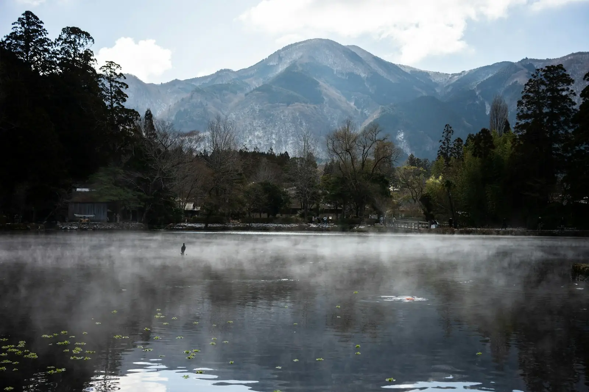
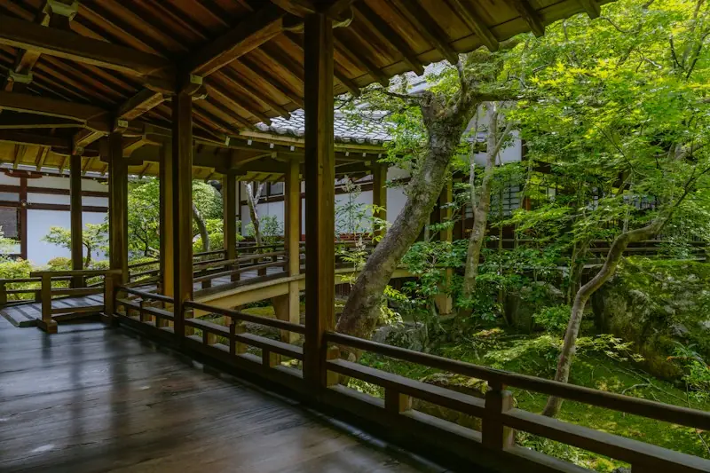

霧の湖畔を歩く
宿の前の小道を下ると、すぐに湖岸です。風のない朝は、水面に山がそのまま映ります。長靴をお貸しします。

一日一組、築百年の家を、まるごと。
朝は霧の湖へ、夜は囲炉裏の火のそばで。
汀ノ灯は、湖まで歩いて三分、裏手に山の雑木林が迫る場所に建つ古民家です。もとは農家の母屋として使われていた建物を、梁と土間を残したまま、静かに過ごせるよう手を入れました。
お泊まりは一日一組だけ。ほかのお客さまと顔を合わせることはありません。台所も庭も縁側も、滞在のあいだはすべてあなたのものです。
テレビは置いていません。そのかわり、本棚と、湖の見える縁側があります。


かまどの跡を残した広い土間に、ガスと冷蔵庫のそろった台所。地元の野菜を買ってきて、自分たちで料理を楽しめます。
夕方から火を入れてお待ちしています。炭の扱いは到着時にご説明しますので、はじめての方も安心です。
障子越しに裏山の緑が見える二間続き。布団は厚手の綿のものを、人数分ご用意します。
窓を開けると、湖からの風が入ります。湯は二十四時間いつでもお使いいただけます。
車で十五分圏内に、湖と山の楽しみがそろっています。ゆっくりしたい日は、家から出なくても十分です。
宿の前の小道を下ると、すぐに湖岸です。風のない朝は、水面に山がそのまま映ります。長靴をお貸しします。
山側へ車で十分、棚田を見下ろす遊歩道があります。一周およそ一時間。途中の無人販売所で野菜が買えます。
宿の小さな桟橋は、夕日が湖に沈むのを眺める特等席です。冷えるので、羽織りものを一枚お持ちください。
まわりに街灯がほとんどないため、晴れた夜は星がよく見えます。灯りを消して、縁側の座布団でどうぞ。